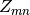

CarpenterSampleCorrection dialog.
Table of Contents
Applies both absorption and multiple scattering corrections, originally used to correct vanadium spectrum at IPNS.
CalculateCarpenterSampleCorrection, CylinderAbsorption, MonteCarloAbsorption, MayersSampleCorrection, PearlMCAbsorption, VesuvioCalculateMS
This algorithm is also known as: MultipleScatteringCylinderAbsorption
| Name | Direction | Type | Default | Description |
|---|---|---|---|---|
| InputWorkspace | Input | MatrixWorkspace | Mandatory | The name of the input workspace. |
| OutputWorkspace | Output | MatrixWorkspace | Mandatory | The name of the output workspace. |
| AttenuationXSection | Input | number | 2.8 | Coefficient 1, absorption cross section / 1.81 if not set with SetSampleMaterial |
| ScatteringXSection | Input | number | 5.1 | Coefficient 3, total scattering cross section if not set with SetSampleMaterial |
| SampleNumberDensity | Input | number | 0.0721 | Coefficient 2, density if not set with SetSampleMaterial |
| CylinderSampleRadius | Input | number | 0.3175 | Sample radius, in cm |
This algorithm is a port to C++ of a multiple scattering absorption correction, used to correct the vanadium spectrum for the GPPD instrument at the IPNS. The correction calculation was originally worked out by Jack Carpenter and Asfia Huq and implemented in Java by Alok Chatterjee. The java code was translated to C++ in Mantid by Dennis Mikkelson.
In [1] we see that the calculation of the attenuation factor F involves an integral over the sample cylinder. By expanding the integrands as a power series, we can factor out any dependence on scattering cross section and radius. These integral terms are denoted by  and so we may write:

where  is the inverse scattering length.
is the inverse scattering length.
The functions  are written in terms of Chebyshev
expansion coefficients:
are written in terms of Chebyshev
expansion coefficients:

where the Chebyshev coefficients  up to m + n
up to m + n
 5 have been tabulated and are stored as an array by the algorithm.
5 have been tabulated and are stored as an array by the algorithm.
This version of the correction follows the implementation in [1] in that it only calculates for the correction in-plane, unlike [2], [3] that generalizes the correction to out-of-plane.
This algorithm calls CalculateCarpenterSampleCorrection v1 to calculate both absorption and multiple scattering corrections and then applies both to the sample workspace.
Example: A simple cylindrical sample
ws = CreateSampleWorkspace("Histogram",NumBanks=1,BankPixelWidth=1)
ws = ConvertUnits(ws,"Wavelength")
ws = Rebin(ws,Params=[1])
SetSampleMaterial(ws,ChemicalFormula="V")
#restrict the number of wavelength points to speed up the example
wsOut = CarpenterSampleCorrection(ws,CylinderSampleRadius=0.2)
print("Output: {}".format(wsOut.readY(0)))
Output:
Output: [ 6.1210107 6.57502041 19.47638255 7.58160094 8.13860778
2.33885171]
| [1] | (1, 2) J.M. Carpenter Attenuation Correction Factor for Scattering from Cylindrical Targets Review of Scientific Instruments 40.4 (1969): 555. doi: 10.1063/1.1684003 |
| [2] | D.F.R. Mildner, J.M. Carpenter, and C.A. Pelizzari Generalized Attenuation Correction Factor for Scattering from Cylindrical Targets Review of Scientific Instruments 45.4 (1974): 572. doi: 10.1063/1.1686687 |
| [3] | D.F.R. Mildner and J.M.Carpenter Improvements to the Chebyshev Expansion of Attenuation Correction Factors for Cylindrical Samples. J Appl Crystallogr 23.5 (1990): 378–386 doi: 10.1107/S0021889890005258 |
Categories: AlgorithmIndex | CorrectionFunctions\AbsorptionCorrections
C++ header: CarpenterSampleCorrection.h (last modified: 2020-03-25)
C++ source: CarpenterSampleCorrection.cpp (last modified: 2020-04-07)